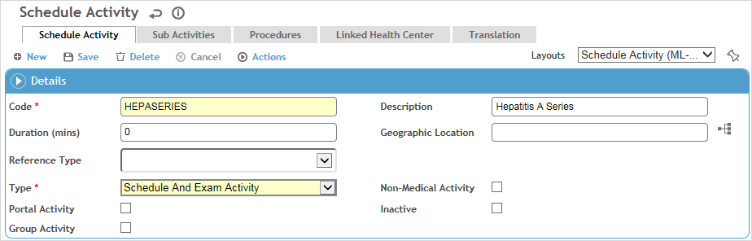
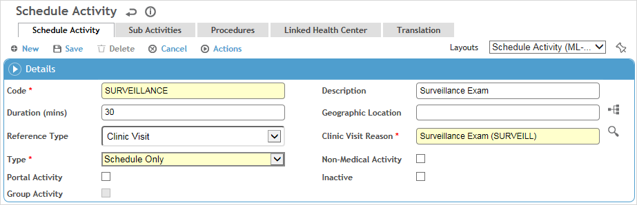
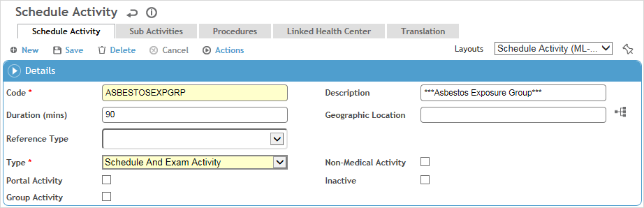
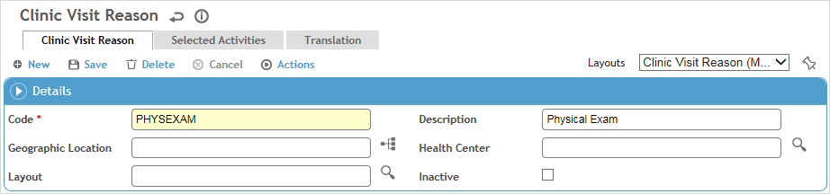

The surveillance feature in Cority works with several modules and look-up tables to complete employee surveillance. Follow these steps to set up all necessary look-up tables for the surveillance to work properly.
Set up the components required by each module that you want to link to. For example, if you are defining an activity called CBC (Complete Blood Count) that is linked to the Clinical Testing module, you must have defined the test battery to be used and the tests that are part of that battery.
Module |
Look-up Tables Required and Order |
|---|---|
Clinical
Tests |
|
Questionnaires |
|
Training
Courses |
|
Immunization |
|
Respirator |
Set up the ScheduleActivity look-up table which links an activity to a module and specific components. For example:


The exposure group name can be created as a schedule activity and used in the ExposureGroup look-up table as a recall activity for those clients wanting to recall by an exposure group instead of specific activities. This will allow exam activities to be identified as a template related to the clinic visit reason. It is recommended that you put asterisks around each activity that has the same name as the exposure group to easily identify programs vs. activities.

In the Reference Type field, select the module to be linked with the activity from the list. Depending on the module selected, you may be prompted to select further components of the activity.
Select the activity Type:
“Schedule Only” activities will only appear in the Activity field in the Appointments module. If the Reference Type is Clinic Visit, the Type can only be Schedule Only.
“Schedule and Exam Activity” activities will appear as choices in all schedule activity look-up lists.
“Exam Activity Only” activities will not appear as available activities in the Appointments module.
If the activity is not related to a medical module, select Non-Medical Activity.
A medical surveillance activity can be identified as a “group activity” that will encompass multiple related activity codes for an SEG, e.g. different questionnaires per location. To view the sub-activities that have been added to a group activity when in the clinic visit record, open the group activity (on the Exam Activity tab) - they are listed in a separate Sub-activity section. When any one of the sub activities is completed, the group activity’s Last Test Date is updated with the Test Date of the most recent sub-activity and if Last Test Date matches the clinic visit treatment date, then the group activity is marked as complete. To use this functionality:
On the Schedule Activity tab, select the Group Activity checkbox.
On the Sub Activities tab, add the related activities.
In the ExposureGroup look-up table, add the group activity to the Recall Definitions tab and mark it as Mandatory.
For more information about these fields, see ScheduleActivity.
Define the ClinicVisitReason table, which links a grouping of schedule activities into a single clinic visit reason. When a clinic visit reason is selected as part of a clinic visit record, the linked activities will automatically display on the Exam Activities tab. For example, a Clinic Visit Reason of “Physical Examination” could have the linked activities shown below:

Set up the SEGs and their recall activities in the ExposureGroup table. SEGs are groups of employees who require the same medical surveillance. Setting up an SEG allows you to schedule standard recalls for all members of the SEG (e.g. for hearing or vision tests, biosurveillance, or training).